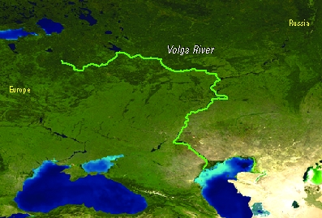

Волга
Во́лга — река в европейской части России (небольшая часть дельты Волги, вне основного русла реки, находится на территории Казахстана). Одна из крупнейших рек на Земле и самая большая по водности, площади бассейна и длине в Европе, а также крупнейшая в мире река, впадающая в бессточный (внутренний) водоём.
Длина реки составляет 3530 км (до постройки водохранилищ — 3690 км), а площадь водосборного бассейна — 1360 тыс. км². Годовой сток составляет 254 км³.
На Волге расположены четыре города-миллионера (от истока к устью): Нижний Новгород, Казань, Самара и Волгоград. В 1930-х — 1980-х годах на Волге было построено восемь гидроэлектростанций, являющихся частью Волжско-Камского каскада.
Прилегающая к Волге часть территории России называется Поволжьем.
Название
У античных авторов первых веков н. э. (Клавдий Птолемей и Аммиан Марцеллин) Волга называлась Ра, лат. Rha (ср. мокш. и эрз. Рав — оба названия иранского происхождения).
В Средние века Волга с Камой и Белой известна под названием Итиль (ср. современные названия тат. Идел, ног. Эдил, каз. Еділ, чуваш. Атӑл, калм. Иҗил). Византийский хронист Феофан Исповедник, описывая географические названия Северного Причерноморья, несколько раз упоминает «величайшую реку, стекающую вниз от океана по земле сарматов и называемую Ατελ».
Русское название Волга (др.-рус. Вльга) произошло от праславянского *Vьlga, ср. во́лглый — волога — влага. В пользу славянской версии происхождения названия говорит наличие рек Vlha в Чехии и Вильга в Польше.
Исходя из того, что верховье Волги находится в зоне, где широко представлена гидронимия балтского происхождения, предложена этимология из балтийских языков: ilga «длинный, долгий» → оз. Волго → р. Волга; valka «ручей, небольшая река». Альтернативные версии выводят название реки из прибалтийско-финских (фин. valkea, эст. valge «белый», ср. Вологда) и марийского (др.-марийск. *Jylγ (из тюрк.), совр. мар. Юл; мар. Волгыдо «светлый») языков.
Географическое положение
Волга берёт начало на Валдайской возвышенности (на высоте 228 метров) и впадает в Каспийское море. Устье реки лежит на 28 метров ниже уровня моря. Волга — крупнейшая в мире река внутреннего стока, то есть не впадающая в мировой океан.
Речная система бассейна Волги включает 151 тысячу водотоков общей протяжённостью 574 тыс. км. Волга принимает около 200 притоков. Левые притоки многочисленнее и многоводнее правых. После Камышина значительных притоков нет.
Бассейн Волги занимает около ⅓ европейской территории России и простирается от Валдайской и Среднерусской возвышенностей на западе до Урала на востоке. Основная, питающая часть водосборной площади Волги, от истока до городов Нижнего Новгорода и Казани, расположена в лесной зоне, средняя часть бассейна до городов Самары и Саратова — в лесостепной зоне, нижняя часть — в степной зоне до Волгограда, а южнее — в полупустынной. Волгу принято подразделять на верхнюю Волгу — от истока до устья Оки, среднюю — от впадения Оки до устья Камы и нижнюю — от впадения Камы до впадения в Каспийское море.
Исток Волги
Исток Волги — ключ у деревни Волговерховье в Тверской области. В верхнем течении, в пределах Валдайской возвышенности Волга проходит через небольшие озёра — Малое и Большое Верхиты, затем через систему крупных озёр, известных как Верхневолжские озёра: Стерж, Вселуг, Пено и Волго, объединённые в Верхневолжское водохранилище.
Верхняя Волга
После прохождения Волги через систему Верхневолжских озёр в 1843 году была сооружена плотина (Верхневолжский бейшлот) для регулирования стока воды и поддержания судоходных глубин в межень.
Первый крупный населённый пункт на Волге от истока — город Ржев. За ним начинается судоходная зона.
Ниже Костромы Волга фактически перестаёт быть рекой и представляет собой череду водохранилищ, сплошь зарегулирована. Между городами Тверью и Рыбинском на Волге созданы Иваньковское водохранилище (так называемое Московское море) с плотиной и ГЭС у г. Дубны, Угличское водохранилище (ГЭС у Углича) — Рыбинское водохранилище (ГЭС у Рыбинска). В районе Рыбинск — Ярославль и ниже Костромы река протекает в узкой долине среди высоких берегов, пересекая Угличско-Даниловскую и Галичско-Чухломскую возвышенности. Далее Волга течёт вдоль Унженской и Балахнинской низменностей. У Городца (выше Нижнего Новгорода) Волга, перегороженная плотиной Нижегородской ГЭС, образует Горьковское водохранилище.
Строительство Рыбинской и Нижегородской ГЭС перераспределило годовой сток ниже Городца. Паводок (весенний сток) был срезан, сток во время летней-осенней межени был увеличен на 15 %, в зимнюю межень — в два раза.
Участок после Городецких шлюзов является проблемным для судоходства, на нём много перекатов (Городецкий, Верхне-Кочергинский, Нижне-Кочергинский, Верхне-Ветлянский, Нижне-Ветлянский, Парашинский яр, Верхне-Парашинский, Нижний Парашинский, Коровий, Козинский, Георгиевский, Верхне-Ревякский, Средне-Ревякский, Нижне-Ревякский, мели реки Оки), а также островов (Кочергинский/Щукобор, Красавчик, Ревякский) и огрудков (Кочергинские, Ветлянкие, Кубенцовские, Балахнинские). Для увеличения судоходных глубин на острове Ревякский рассматривается возможность строительства Нижегородского низконапорного гидроузла.
Крупнейшие притоки верхней Волги — Селижаровка, Тьма, Тверца, Молога, Шексна, Которосль и Унжа.
Средняя Волга
В среднем течении, ниже впадения Оки, Волга становится ещё более полноводной. Она течёт вдоль северного края Приволжской возвышенности. Правый берег реки высокий, левый — низменный. У Чебоксар построена Чебоксарская ГЭС, выше плотины которой расположено Чебоксарское водохранилище. Наиболее крупные притоки Волги в её среднем течении — Ока, Сура, Ветлуга и Свияга.
Нижняя Волга
В нижнем течении после впадения Камы Волга получает довольно мало речного стока. Она протекает здесь вдоль Приволжской возвышенности. Около Тольятти выше Самарской Луки, которую образует Волга, огибая Жигулёвские горы, сооружена плотина Жигулёвской ГЭС; выше плотины простирается Куйбышевское водохранилище. На Волге в районе города Балаково возведена плотина Саратовской ГЭС. Выше плотины находится Саратовское водохранилище. Нижняя Волга принимает сравнительно небольшие притоки — Сок, Самару, Большой Иргиз, Еруслан. В Волгограде, в районе Волжской ГЭС от Волги отделяется левый рукав — Ахтуба (длина 537 км), которая течёт параллельно основному руслу. Обширное пространство между Волгой и Ахтубой, пересечённое многочисленными протоками и староречьями, называется Волго-Ахтубинской поймой; ширина разливов в пределах этой поймы достигала прежде 20—30 км. На Волге между началом Ахтубы и Волгоградом построена Волжская ГЭС; выше плотины простирается Волгоградское водохранилище. В сорока километрах ниже плотины к Волге примыкает Волго-Донской канал, связывающий её с Цимлянским водохранилищем Дона.
Дельта Волги начинается в месте отделения от русла Волги рукава Бузан (в 46 км севернее Астрахани) и является одной из самых крупных в России и крупнейшей в Европе. В дельте насчитывается до 500 рукавов, протоков и мелких речек. Главные рукава — Бузан, Бахтемир, Камызяк, Старая Волга, Болда, Ахтуба; из них в судоходном состоянии поддерживается Бахтемир, образуя Волго-Каспийский канал. Один из рукавов нижнего течения Волги — река Кигач — пересекает территорию Казахстана. С указанного рукава берёт начало стратегический водовод «Волга — Мангышлак», обеспечивающий пресной водой отдельные районы Мангистауской области Казахстана.
После сооружения Куйбышевского водохранилища границей между средней и нижней Волгой в некоторых источниках считают Жигулёвскую ГЭС выше Самары. В других источниках границей между средней и нижней Волгой считается Саратовская ГЭС (в городе Балаково); таким образом (как и в делении Поволжья на части), к нижней Волге относятся Саратовская область (кроме крайних северных районов), Волгоградская область, республика Калмыкия и Астраханская область.
Несколько интересных фактов о Волге
Источники:
Википедия